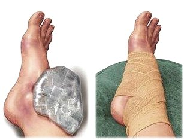
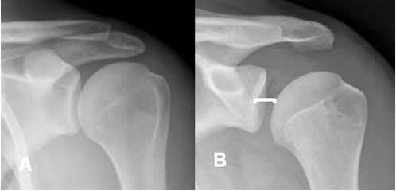
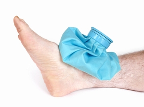

Fracturas y otras lesiones en huesos y articulaciones
Las principales lesiones que afectan a los huesos, tendones, ligamentos, músculos y articulaciones son:
- Fracturas
- Esguinces
- Luxaciones
- Calambres y desgarros
Es muy difícil diferenciar el tipo de lesión, a simple vista, Tú, como auxiliador no trates de averiguarlo, simplemente actúa como si fuera fractura, esto evitará muchas complicaciones innecesarias.
Recomendaciones generales al atender una fractura
- Retira la víctima del lugar del accidente, si hay peligro.
- Realiza una valoración primaria del herido, conciencia, respiración, pulso, sangrado. Es muy común que esté tipo de heridas causen estado de shock, como resultado del dolor, y la hemorragia.
- Realiza una valoración secundaria e identifica el tipo de lesión para proseguir con la inmovilización.
- Verifica que la parte lesionada si tiene sensibilidad, si la temperatura y coloración son normales.
Qué NO hacer para tratar una fractura
- Nunca trates de poner un hueso en su lugar, esto requiere de adiestramiento médico especializado.
- Si la fractura es expuesta no toques el hueso, cubre la herida con una gasa estéril o trapo limpio, inmoviliza a la víctima y trasládala de inmediato a un centro médico.
- Si la lesión es en una pierna o pie y el lesionado aún trae puesto el zapato, no trates de quitárselo, esto puede aumentar la lesión o provocar otra en caso de que el hueso esté astillado.
Puntos de presión
En caso de que haya hemorragia no podrás hacer presión sobre la herida, lo más conveniente es hacer presión directa sobre la arteria que surte sangre en la extremidad correspondiente, punto de presión.
Miembros superiores
La presión se hace sobre la arteria braquial, cara interna del tercio medio del brazo. Esta presión disminuye la sangre en brazo, antebrazo y mano. Para aplicar la presión, coloque la palma de su mano debajo del brazo de la víctima, palpe la arteria y presiónela contra el hueso.
Miembros inferiores
La presión se hace en la ingle sobre la arteria femoral. Esta presión disminuye la hemorragia en muslo, pierna y pie. Coloca la base de la palma de una mano en la parte media del pliegue de la ingle.
Fracturas
Es una ruptura en los huesos, a consecuencia de golpes, fuerzas o tracciones cuyas intensidades superen la elasticidad del hueso.
El término se aplica para todo tipo de roturas, desde aquellas en que el hueso se destruye amplia y evidentemente, hasta aquellas lesiones muy pequeñas e incluso microscópicas
Posible síntomas
- Dolor muy fuerte, inflamación y deformación del miembro afectado.
- Moretones de consideración.
- Inmovilidad funcional y por el dolor.
- Hemorragias (Externas o internas).
Que hacer en caso de una fractura
1 No trates de colocar los huesos en su lugar, esto requiere de experiencia médica especializada.
Detén la hemorragia si se presenta, a través de los puntos de presión. No hagas presión directamente sobre la lesión y que con esto puedes provocar mucho dolor, o romper un hueso que esté astillado.
2 Inmoviliza inmediatamente a la víctima, aplicando un entablillamiento en la zona afectada, par ellos sigue los siguientes pasos:
- Recuesta al paciente de la forma más cómoda, pero sin causar dolor al moverlo.
- Busca un material rígido con que hacer el entablillamiento, puedes usar ramas, bordones, tablas, e incluso revistas dobladas para este fin.
- De ser posible cubre con vendas o tela el material a usar para evitar que lastime al paciente.
- Con unas vendas, pañoletas, cinturones, o lo que tengas a mano que sea factible, procede a fijar el entablillado al miembro afectado.
- En caso de lesiones de cuello, puedes improvisar un collarín usando gorras o zapatos.
3 Pide asistencia médica urgente.
Es muy conveniente pedir servicio de ambulancia, para un traslado adecuado (si es posible).
Inmovilización del antebrazo y muñeca
Inmovilización del brazo
Inmovilización extremidades inferiores
Inmovilización de espalda, cadera y extremidades inferiores
Esguinces
En este tipo de lesiones la parte implicada son los tejidos, el tendón y la articulación.
Las articulaciones que se lastiman con más facilidad son las que se encuentran en el tobillo, codo, rodilla, muñeca y dedos.
La sangre y los fluidos se filtran a través de los vasos sanguíneos desgarrados y ocasionan inflamación y dolor en el área de la lesión.
Posible síntomas
- Dolor muy fuerte e inflamación.
- Moretones de consideración.
- Alteración de movilidad: la función de la articulación, no se perderá por completo, los movimientos se ven limitados por el dolor.
Que hacer en caso de un esguince
1 Traslade al paciente a una zona cómoda donde pueda recostarse, y estar tranquilo mientras s le atiende.
2 Aplicar una bolsa de hielo envuelta en una tela, sobre la parte lesionada. Vendar para inmovilizar la articulación.
No dar masajes ni hacer movimientos en el miembro afectado.
3 Aún cuando por lo general no son lesiones graves, no podemos estar seguros si se trata de un esguince solamente o si hay algo más, por lo cual siempre es recomendable llevar a la víctima a un centro de salud para finalizar su atención.
Luxaciones
Por luxación se entiende el desplazamiento completo y permanente en una articulación de una cabeza articulada con respecto a otra después de un movimiento forzado y grande.
Sobre todo están afectadas por la luxación la espalda y las caderas.
Posible síntomas
- Fuerte dolor en el momento de la luxación, que rápidamente desaparecerá, pero el dolor se manifestará inmediatamente al intento de cualquier movimiento.
- Deformación, la articulación afectada perderá su forma normal.
- Impotencia funcional, la víctima no puede efectuar ningún movimiento ni activo, ni pasivo, bien sea por el fuerte dolor al movimiento o por el bloqueo mecánico de la articulación.
Que hacer en caso de una luxación
1 No trates de colocar las cabezas articulares en su lugar, esto requiere de experiencia médica especializada, ni tampoco se debe administrar ningún medicamento ni pomada (excepto si un médico lo prescribe).
2 En todo caso lo que se debe hacer es inmovilizar inmediatamente a la víctima, y si es posible aplicar hielo sobre la zona de la lesión para producir analgesia.
3 Pide asistencia médica urgente, tal vez sea conveniente pedir servicio de ambulancia, para un traslado adecuado (si es posible).
Desgarro Muscular
El desgarro muscular es la lesión del tejido muscular, que va acompañada de hemorragia provocada por la rotura de los vasos sanguíneos que recorren el músculo afectado, provocando un dolor muy intenso que impide contraerlo.
Por lo general los músculos más afectados son los del cuello, la espalda, los muslos o pantorrilla.
Posible síntomas
- Dolor repentino, agudo e intenso pero momentáneo, acompañado generalmente de un hematoma.
- En los casos más graves (al desgarre total del músculo) se produce un hematoma muy extenso e inflamación más pronunciada, que inmoviliza la región afectada que se experimenta como una parálisis temporal (contractura de musculación vecina a la lesión). Si el dolor es muy intenso puede aparecer un componente de shock - aunque es poco frecuente - con mareo y sudor frío.
Que hacer en caso de un desgarro muscular
1 Se puede aplicar hielo en el área lastimada, de 7 a 10 minutos, para evitar que se extienda el hematoma y reducir la inflamación. No se debe aplicar el hielo directamente en la piel.
2 Inmoviliza a la víctima y pide ayuda médica. La zona que ha sufrido la lesión debe colocarse en reposo a un nivel más elevado que el resto del cuerpo. No apliques masajes, ni intentes estirara la parte afectada.